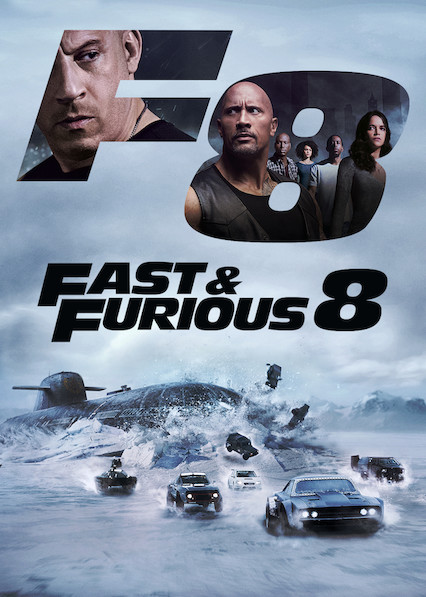

Rank |
Movie Title |
Film synopsis |
Box office |
Release |
|---|---|---|---|---|
| 1 | Avatar |
On the lush alien world of Pandora live the Na'vi, beings who appear primitive but are highly evolved. Because the planet's environment is poisonous, human/Na'vi hybrids, called Avatars, must link to human minds to allow for free movement on Pandora. Jake Sully (Sam Worthington), a paralyzed former Marine, becomes mobile again through one such Avatar and falls in love with a Na'vi woman (Zoe Saldana). As a bond with her grows, he is drawn into a battle for the survival of her world. | $2,847,246,203 | 2009 |
| 2 |  Avengers: End Game |
Adrift in space with no food or water, Tony Stark sends a message to Pepper Potts as his oxygen supply starts to dwindle. Meanwhile, the remaining Avengers -- Thor, Black Widow, Captain America and Bruce Banner -- must figure out a way to bring back their vanquished allies for an epic showdown with Thanos -- the evil demigod who decimated the planet and the universe. | $2,797,501,328 | 2019 |
| 3 |  Titanic |
James Cameron's "Titanic" is an epic, action-packed romance set against the ill-fated maiden voyage of the R.M.S. Titanic; the pride and joy of the White Star Line and, at the time, the largest moving object ever built. She was the most luxurious liner of her era -- the "ship of dreams" -- which ultimately carried over 1,500 people to their death in the ice cold waters of the North Atlantic in the early hours of April 15, 1912. | $2,187,425,379 | 1997 |
| 4 |  Star Wars: The force awakens |
Thirty years after the defeat of the Galactic Empire, Han Solo (Harrison Ford) and his young allies face a new threat from the evil Kylo Ren (Adam Driver) and the First Order. | $2,068,223,624 | 2015 |
| 5 |  Avengers: Infinity War |
Iron Man, Thor, the Hulk and the rest of the Avengers unite to battle their most powerful enemy yet -- the evil Thanos. On a mission to collect all six Infinity Stones, Thanos plans to use the artifacts to inflict his twisted will on reality. The fate of the planet and existence itself has never been more uncertain as everything the Avengers have fought for has led up to this moment. | $2,048,359,754 | 2018 |
| 6 |  Jurassic World |
Located off the coast of Costa Rica, the Jurassic World luxury resort provides a habitat for an array of genetically engineered dinosaurs, including the vicious and intelligent Indominus rex. When the massive creature escapes, it sets off a chain reaction that causes the other dinos to run amok. Now, it's up to a former military man and animal expert (Chris Pratt) to use his special skills to save two young brothers and the rest of the tourists from an all-out, prehistoric assault. | $1,671,713,208 | 2015 |
| 7 |  The Lion King |
Simba idolizes his father, King Mufasa, and takes to heart his own royal destiny on the plains of Africa. But not everyone in the kingdom celebrates the new cub's arrival. Scar, Mufasa's brother -- and former heir to the throne -- has plans of his own. The battle for Pride Rock is soon ravaged with betrayal, tragedy and drama, ultimately resulting in Simba's exile. Now, with help from a curious pair of newfound friends, Simba must figure out how to grow up and take back what is rightfully his. | $1,656,943,394 | 2019 |
| 8 | The Avengers |
When Thor's evil brother, Loki (Tom Hiddleston), gains access to the unlimited power of the energy cube called the Tesseract, Nick Fury (Samuel L. Jackson), director of S.H.I.E.L.D., initiates a superhero recruitment effort to defeat the unprecedented threat to Earth. Joining Fury's "dream team" are Iron Man (Robert Downey Jr.), Captain America (Chris Evans), the Hulk (Mark Ruffalo), Thor (Chris Hemsworth), the Black Widow (Scarlett Johansson) and Hawkeye (Jeremy Renner). | $1,518,812,988 | 2012 |
| 9 |  Furious 7 |
After defeating international terrorist Owen Shaw, Dominic Toretto (Vin Diesel), Brian O'Conner (Paul Walker) and the rest of the crew have separated to return to more normal lives. However, Deckard Shaw (Jason Statham), Owen's older brother, is thirsty for revenge. A slick government agent offers to help Dom and company take care of Shaw in exchange for their help in rescuing a kidnapped computer hacker who has developed a powerful surveillance program. | $1,516,045,911 | 2015 |
| 10 |  Frozen 2 |
Elsa the Snow Queen has an extraordinary gift -- the power to create ice and snow. But no matter how happy she is to be surrounded by the people of Arendelle, Elsa finds herself strangely unsettled. After hearing a mysterious voice call out to her, Elsa travels to the enchanted forests and dark seas beyond her kingdom -- an adventure that soon turns into a journey of self-discovery. | $1,450,026,933 | 2019 |
| 11 |  Avengers: Age of Ultron |
When Tony Stark (Robert Downey Jr.) jump-starts a dormant peacekeeping program, things go terribly awry, forcing him, Thor (Chris Hemsworth), the Incredible Hulk (Mark Ruffalo) and the rest of the Avengers to reassemble. As the fate of Earth hangs in the balance, the team is put to the ultimate test as they battle Ultron, a technological terror hell-bent on human extinction. Along the way, they encounter two mysterious and powerful newcomers, Pietro and Wanda Maximoff. | $1,402,805,868 | 2015 |
| 12 |  Black Panther |
After the death of his father, T'Challa returns home to the African nation of Wakanda to take his rightful place as king. When a powerful enemy suddenly reappears, T'Challa's mettle as king -- and as Black Panther -- gets tested when he's drawn into a conflict that puts the fate of Wakanda and the entire world at risk. Faced with treachery and danger, the young king must rally his allies and release the full power of Black Panther to defeat his foes and secure the safety of his people. | $1,347,280,838 | 2018 |
| 13 |  Harry Potter and the Deathly Hallows – Part 2 |
A clash between good and evil awaits as young Harry (Daniel Radcliffe), Ron (Rupert Grint) and Hermione (Emma Watson) prepare for a final battle against Lord Voldemort (Ralph Fiennes). Harry has grown into a steely lad on a mission to rid the world of evil. The friends must search for the Horcruxes that keep the dastardly wizard immortal. Harry and Voldemort meet at Hogwarts Castle for an epic showdown where the forces of darkness may finally meet their match. | $1,342,025,430 | 2011 |
| 14 |  Star Wars: The Last Jedi |
Luke Skywalker's peaceful and solitary existence gets upended when he encounters Rey, a young woman who shows strong signs of the Force. Her desire to learn the ways of the Jedi forces Luke to make a decision that changes their lives forever. Meanwhile, Kylo Ren and General Hux lead the First Order in an all-out assault against Leia and the Resistance for supremacy of the galaxy. | $1,332,539,889 | 2017 |
| 15 | Jurassic World: Fallen Kingdom |
Three years after the destruction of the Jurassic World theme park, Owen Grady and Claire Dearing return to the island of Isla Nublar to save the remaining dinosaurs from a volcano that's about to erupt. They soon encounter terrifying new breeds of gigantic dinosaurs, while uncovering a conspiracy that threatens the entire planet. | $1,309,484,461 | 2018 |
| 16 |  Frozen |
When their kingdom becomes trapped in perpetual winter, fearless Anna (Kristen Bell) joins forces with mountaineer Kristoff (Jonathan Groff) and his reindeer sidekick to find Anna's sister, Snow Queen Elsa (Idina Menzel), and break her icy spell. Although their epic journey leads them to encounters with mystical trolls, a comedic snowman (Josh Gad), harsh conditions, and magic at every turn, Anna and Kristoff bravely push onward in a race to save their kingdom from winter's cold grip. | $1,290,000,000 | 2013 |
| 17 |  Beauty and the Beast |
An arrogant young prince (Robby Benson) and his castle's servants fall under the spell of a wicked enchantress, who turns him into the hideous Beast until he learns to love and be loved in return. The spirited, headstrong village girl Belle (Paige O'Hara) enters the Beast's castle after he imprisons her father Maurice (Rex Everhart). With the help of his enchanted servants, including the matronly Mrs. Potts (Angela Lansbury), Belle begins to draw the cold-hearted Beast out of his isolation. | $1,263,521,126 | 2017 |
| 18 | Incredibles 2 |
Telecommunications guru Winston Deavor enlists Elastigirl to fight crime and make the public fall in love with superheroes once again. That leaves Mr. Incredible with one of his greatest challenges ever -- staying home and taking care of three rambunctious children. As Violet, Dash and Jack-Jack offer him a new set of headaches, a cybercriminal named Screenslaver launches his dastardly plan -- hypnotizing the world through computer screens. | $1,242,805,359 | 2018 |
| 19 |  The Fate of the Furious |
With Dom and Letty married, Brian and Mia retired and the rest of the crew exonerated, the globe-trotting team has found some semblance of a normal life. They soon face an unexpected challenge when a mysterious woman named Cipher forces Dom to betray them all. Now, they must unite to bring home the man who made them a family and stop Cipher from unleashing chaos. | $1,238,764,765 | 2017 |
| 20 | Iron Man 3 |
Plagued with worry and insomnia since saving New York from destruction, Tony Stark (Robert Downey Jr.), now, is more dependent on the suits that give him his Iron Man persona -- so much so that every aspect of his life is affected, including his relationship with Pepper (Gwyneth Paltrow). After a malevolent enemy known as the Mandarin (Ben Kingsley) reduces his personal world to rubble, Tony must rely solely on instinct and ingenuity to avenge his losses and protect the people he loves. | $1,214,811,252 | 2013 |
| 21 |  Minions |
Evolving from single-celled yellow organisms at the dawn of time, Minions live to serve, but find themselves working for a continual series of unsuccessful masters, from T. Rex to Napoleon. Without a master to grovel for, the Minions fall into a deep depression. But one minion, Kevin, has a plan; accompanied by his pals Stuart and Bob, Kevin sets forth to find a new evil boss for his brethren to follow. Their search leads them to Scarlet Overkill, the world's first-ever super-villainess. | $1,159,398,397 | 2015 |
| 22 |  Captain America: Civil War |
Political pressure mounts to install a system of accountability when the actions of the Avengers lead to collateral damage. The new status quo deeply divides members of the team. Captain America (Chris Evans) believes superheroes should remain free to defend humanity without government interference. Iron Man (Robert Downey Jr.) sharply disagrees and supports oversight. As the debate escalates into an all-out feud, Black Widow (Scarlett Johansson) and Hawkeye (Jeremy Renner) must pick a side. | $1,153,329,473 | 2016 |
| 23 | Aquaman |
Once home to the most advanced civilization on Earth, the city of Atlantis is now an underwater kingdom ruled by the power-hungry King Orm. With a vast army at his disposal, Orm plans to conquer the remaining oceanic people -- and then the surface world. Standing in his way is Aquaman, Orm's half-human, half-Atlantean brother and true heir to the throne. With help from royal counselor Vulko, Aquaman must retrieve the legendary Trident of Atlan and embrace his destiny as protector of the deep. | $1,148,485,886 | 2018 |
| 24 |  The Lord of the Rings: The Return of the King |
The culmination of nearly 10 years' work and conclusion to Peter Jackson's epic trilogy based on the timeless J.R.R. Tolkien classic, "The Lord of the Rings: The Return of the King" presents the final confrontation between the forces of good and evil fighting for control of the future of Middle-earth. Hobbits Frodo and Sam reach Mordor in their quest to destroy the `one ring', while Aragorn leads the forces of good against Sauron's evil army at the stone city of Minas Tirith. | $1,146,030,912 | 2003 |
| 25 |  Spider-Man: Far From Home |
Peter Parker's relaxing European vacation takes an unexpected turn when Nick Fury shows up in his hotel room to recruit him for a mission. The world is in danger as four massive elemental creatures -- each representing Earth, air, water and fire -- emerge from a hole torn in the universe. Parker soon finds himself donning the Spider-Man suit to help Fury and fellow superhero Mysterio stop the evil entities from wreaking havoc across the continent. | $1,131,927,996 | 2019 |